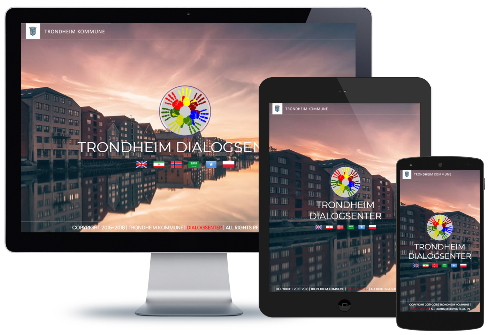

Designed for all display size


01 Learn. Gain knowledge of users, context,
technologies, gather user data, research
competitive products, conduct interviews, and filed studies.
02 Explore. Build user profiles on gathered
data, produce materials that will aid the
outlining of the project, site maps, content
inventories, screen flows, navigation models, task flows, user journeys, scenarios.
03 Select. Evaluate, test, and select
wireframe
concepts for prototype development.
04 Develop. Create design specifications and
evolve concept/ wireframes into full design
solution.
05 Refine. Evaluate design with stakeholders
to
obtain feedback and conduct usability testing.
06 Deliver. Complete design and produce
deliverables.
I follow a user-centered design approach. I work
closely and collaboratively with clients to be able to
observe their needs properly and provide the tailored design that meets their requirements. I go
through rapid cycles of work, feedback, refinement, and validation in my process so that there
is much less long term risk to the end product. This allows me to deliver a useful, easy-to-use,
and successful experience for end users and in turn a return on investment for a business.
In addition to UX Design, I am experienced in graphic design and front-end web development (UI)
that enables me to have a great collaboration with a design team.
I value simple content structure, clean design patterns, and thoughtful interactions.
UX, UI, Web, Mobile, Apps
Site Map, Content Inventories,Wireframe Sketch, Screen Flow, Navigation Model, Gathering Userdata (Interview), User Journys, Visual Design, Rapid/Interactive Prototype, Usability Test
I like to code things from scratch, and enjoy bringing ideas to life in the browser
JavaScript, React JS, React Native, RESTful API, MongoDB, Express, HTML5 and CSS3
VS Code, Adobe Photoshop, Balsamiq, Adobe XD, Bootstrap, Semantic UI, Github, Chrome Developer Tools, Google Analytics